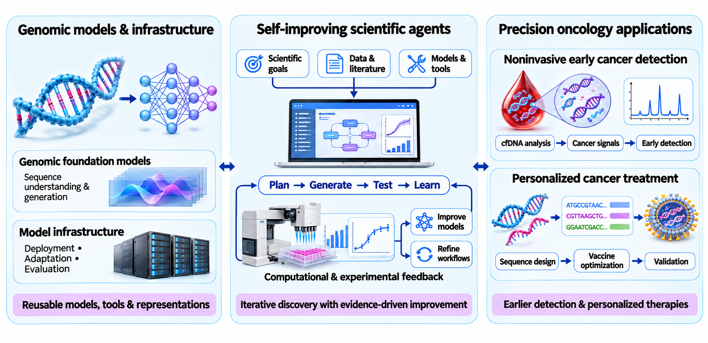

Research internship
Summer 2026Genomics Deep Learning Engineering Intern
Genomic foundation models
I’m a 4th-year Ph.D. candidate in Computer Science & Biochemistry and Molecular Genetics at Northwestern University, co-advised by Prof. Han Liu and Prof. Yaping Liu. My research focuses on recursively self-improving AI agents for scientific discovery, advancing noninvasive early cancer detection using cell-free DNA and personalized cancer treatment through DNA/RNA vaccine design.
Previously, I received my bachelor’s degree in Mathematics from Fudan University in 2023, advised by Prof. Tao Chen, and was recognized as an Outstanding Graduate of Fudan University.
I share research stories, experiments, and ideas on my Blog.
D-DOIT accepted to NeurIPS 2026.
POLO accepted to KDD 2026 as an Oral.
Four papers accepted to ICML 2026, including Genome-Factory. ICML(a) ICML(b) ICML(c) ICML(d)
Sci2Pol accepted to ICLR 2026.
DNABERT-S accepted to Bioinformatics & ISMB 2025 (Oral).
One paper accepted to ICLR 2025.
One paper accepted to NeurIPS 2024.
My work spans four interconnected areas: genomic foundation models, model infrastructure, sequence design, and recursively self-improving scientific agents.

Including GenomeOcean for genomic sequence understanding and design.
Including Genome-Factory for genomic model deployment and adaptation.
Including D-DOIT for DNA/RNA design toward personalized cancer vaccines, alongside DiMOS and DoMinO for sequence design.
Including SciMARS, toward integrating models, tools, and feedback for iterative scientific discovery.
Feinberg School of Medicine, Northwestern University
Shanghai Jiao Tong University School of Medicine
ISMB 2025 · Oral presentation
Debora Marks Lab, Harvard Medical School
I’m interested in entrepreneurship in AI for scientific discovery and medical science. During my undergraduate studies, I founded the Quantitative Investment Association (QIA), the largest nonprofit organization in quantitative finance in China, connecting students, researchers, and industry professionals in quantitative finance.
I host research interns working on genomic foundation models, scientific sequence design, and AI agents for medical science, with GPU resources available for experiments. If you’re interested, email me your CV and a short summary of your research experience.
Get in touch